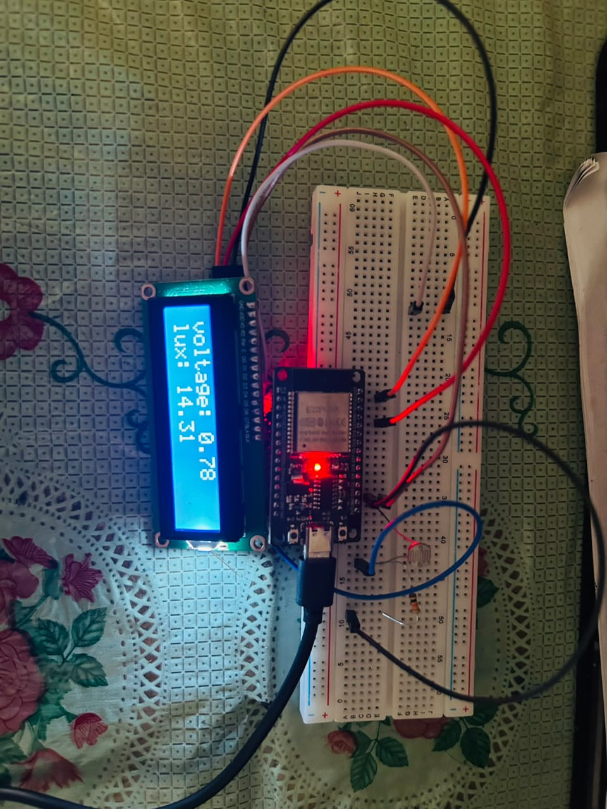
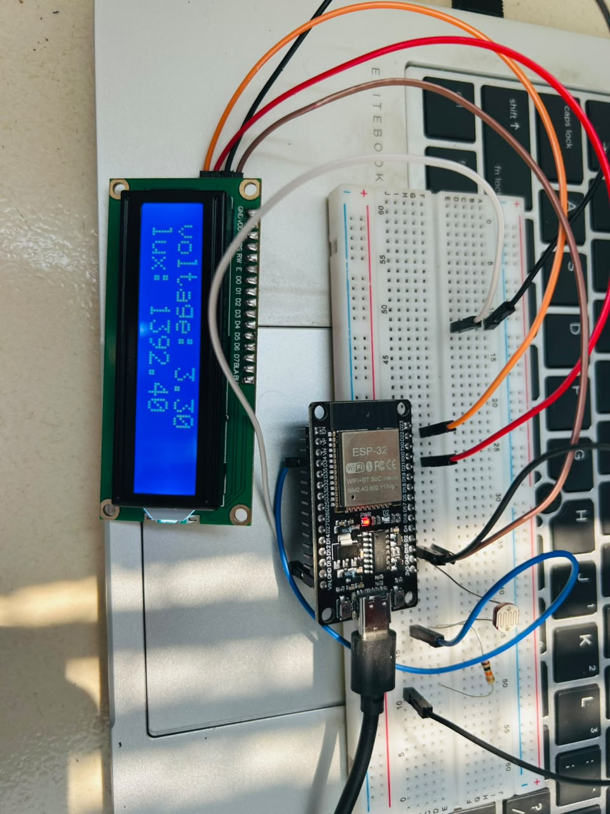
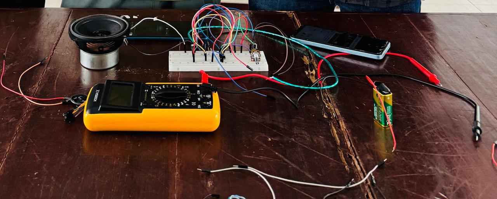
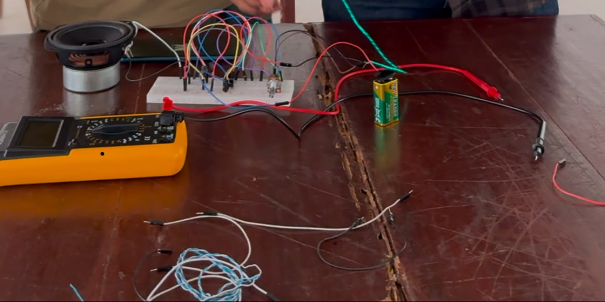
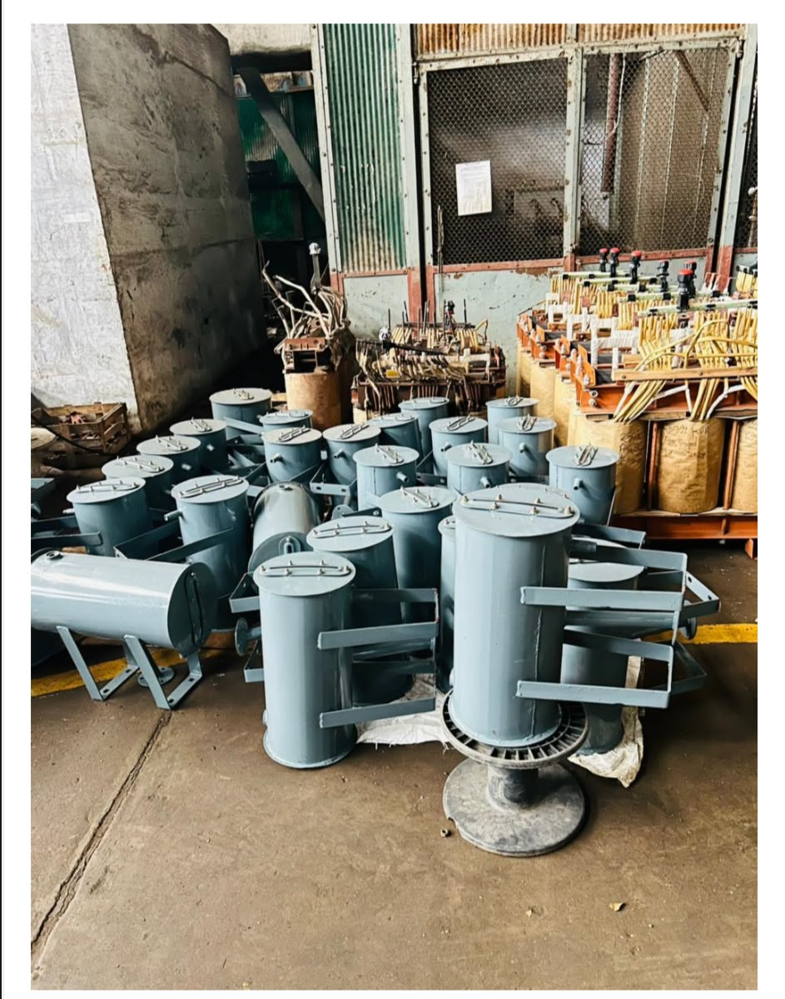

Projects & Experience
Selected projects I’ve worked on.
Digital lux meter using ESP-32
The project was designed to measure light intensity in lux using a light sensor and display the measured value through the ESP32-based system. This project helped me gain practical experience in ESP32 programming, sensor interfacing, data acquisition, real-time measurement, and embedded system development. It was a valuable hands-on experience that strengthened my interest in Embedded Systems, IoT, and Electronics.


Audio Amplifier
The main goal of this project was to amplify a low-level audio signal and produce a stronger output suitable for driving a speaker. Through this project, I gained hands-on experience in analog electronics, signal amplification, circuit design, testing, and troubleshooting. It was a great opportunity to connect theoretical concepts with practical implementation.


8KV Transformer design
Designed a 8kVA distribution transformer using a Delta-Star (\Delta-Y) configuration with a 6.6 kV primary and 433 V secondary voltage, focusing on practical electrical design and cost-effective implementation.

Engineering Lab Log & Ongoing Projects
Active EEE research, circuit designs, and ongoing power system simulation logs.
3-Phase Smart Grid & Transformer Protection Simulation
- Designing an IoT-based power measurement unit with real-time load distribution analysis using MATLAB and ESP32.